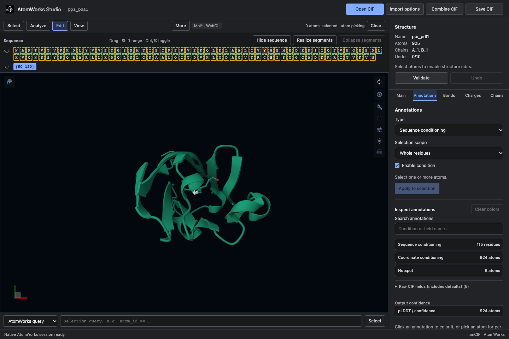

AtomWorks Studio¶
Studio edits annotated molecular structures in a browser, VS Code, or PyMOL. Open a CIF, select atoms, change annotations, and save a file that AtomWorks and RFD4 can read.
Start with installation, then follow the worked example. The selection reference explains exactly what the browser command bar accepts.

How the projects fit together¶
Project |
Owns |
|---|---|
AtomWorks |
Structure arrays, chemical data, annotations, and CIF parsing. |
Studio |
Editing, undo, selection controls, and the browser and PyMOL interfaces. |
RFD4-Proteina |
Model conditions, validation, featurization, and generation. |
The browser and VS Code use one application and API. The native PyMOL plugin uses the same editing library without a web server. The installed annotation adapter adds RFD4 conditions in every interface, without model weights or an inference runtime.
Using Studio